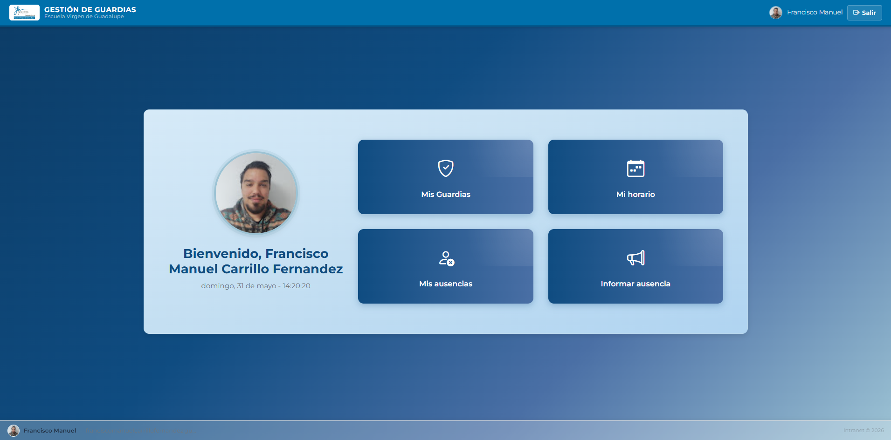
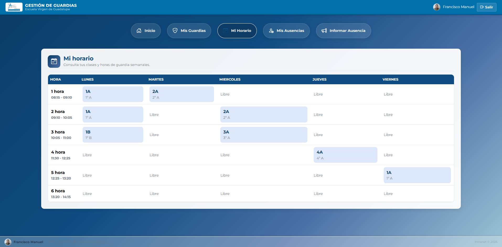
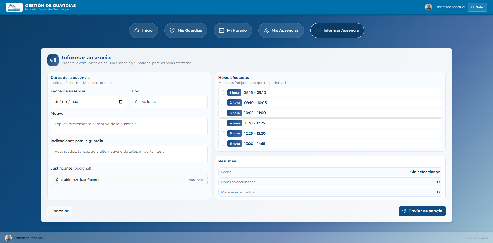
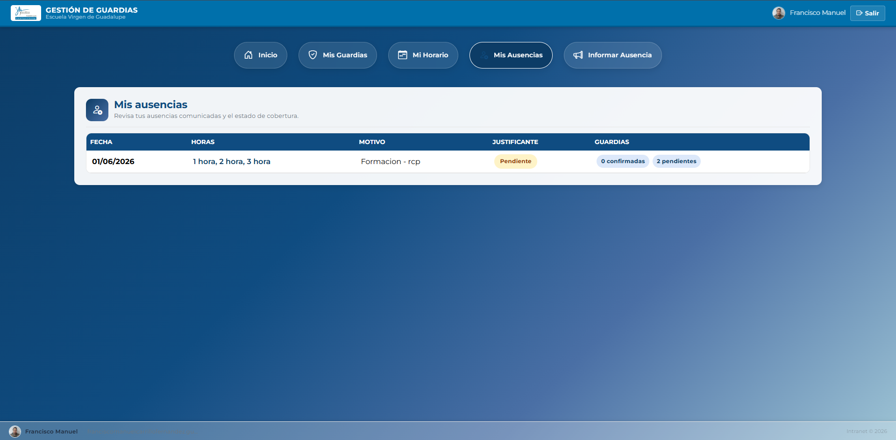
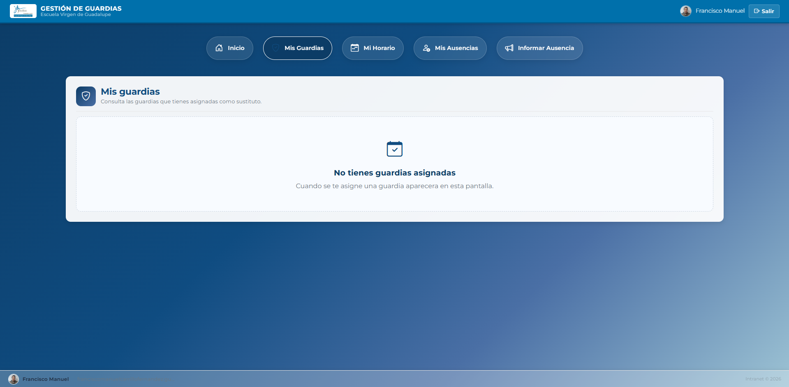

Gestión de Guardias
Manual de Usuario — Profesor
Guía completa para el uso de la aplicación por parte del profesorado.
Eduardo Davilá · Miguel Albenca · Francisco M. Carrillo
¿Qué es Gestión de Guardias?
Gestión de Guardias es una aplicación web del ecosistema EVG (Escuela Virgen de Guadalupe) que permite al profesorado comunicar sus ausencias, consultar el horario semanal, ver las guardias (sustituciones) que tienen asignadas y realizar el seguimiento de todas sus incidencias.
La aplicación está dividida en dos roles:
- Profesor — Funcionalidades para comunicar ausencias, ver horario y consultar guardias.
- Coordinador — Gestión de guardias, asignación de sustituciones, eventos, profesores y grupos.
Este manual está dirigido al perfil de Profesor.
Acceso a la aplicación
Para acceder a Gestión de Guardias:
- Abre tu navegador web (Chrome, Firefox, Edge, etc.).
- Ve a la URL: https://01.proyectos.esvirgua.com/guardias/
- Selecciona el rol Profesor en la pantalla de bienvenida.
- Inicia sesión con tus credenciales de la Intranet EVG.
Una vez autenticado, accederás al panel principal del profesor.
Panel de inicio
Al acceder como profesor, verás tu panel principal con tu foto de perfil, tu nombre completo y un reloj en tiempo real. Desde aquí puedes navegar a las distintas secciones mediante las tarjetas de acceso rápido:

Panel principal del profesor con tarjetas de navegación y reloj en vivo
Mi horario
En la sección Mi Horario puedes consultar tu horario semanal organizado por días (lunes a viernes) y horas lectivas. Cada celda muestra:
- Clase — Código del grupo al que impartes clase en esa hora.
- 🛡️ Guardia — Indica que tienes asignada una guardia en ese periodo.
- Libre — No tienes clase ni guardia en ese horario.
Los periodos se muestran con su nombre y horario (ej. 1ª Hora: 08:15 – 09:10).

Vista del horario semanal con clases, guardias y horas libres
Informar ausencia
Desde esta sección puedes comunicar una ausencia de forma sencilla. El formulario se divide en dos columnas:
Columna izquierda — Datos de la ausencia
Elige el día de tu ausencia (solo días lectivos de lunes a viernes).
Elige entre: Médica, Personal, Formación u Otra.
Explica brevemente la razón de la ausencia (mín. 3 caracteres, máx. 255).
Instrucciones para la guardia: actividades, tareas, aula alternativa... (máx. 1000 caracteres).
Puedes subir un archivo PDF (máx. 5 MB) como justificación.
Columna derecha — Horas afectadas
- Marca las horas lectivas en las que estarás ausente.
- Es obligatorio seleccionar al menos una hora.
- Por cada hora seleccionada puedes adjuntar materiales (PDF, PNG, JPG, DOC, DOCX).

Formulario de comunicación de ausencia con datos y horas afectadas
Mis ausencias
En esta sección puedes consultar el historial de todas las ausencias que has registrado. La tabla muestra:
- Fecha — Día de la ausencia.
- Horas — Periodos lectivos afectados (ej. 1ª, 2ª, 3ª).
- Motivo — Razón indicada al registrar la ausencia.
- Justificante — Badge que indica si está Justificada o Pendiente.
- Guardias — Número de sustituciones confirmadas, pendientes y canceladas.

Listado de ausencias registradas con estado de justificación y guardias
Mis guardias
En Mis Guardias se muestran todas las sustituciones que te han sido asignadas para cubrir ausencias de otros compañeros. Cada guardia se presenta como una tarjeta con:
- Fecha y estado (CONFIRMADO/PENDIENTE).
- Clase a la que debes acudir.
- Hora con el periodo y horario exacto.
- Profesor ausente — Nombre del compañero al que sustituyes.
- Código y etapa del grupo.
- Motivo de la ausencia (si está disponible).

Tarjetas de guardias asignadas con detalles de la sustitución
Resolución de problemas frecuentes
No puedo acceder a la aplicación
Verifica que tus credenciales de Intranet EVG son correctas. Si el problema persiste, contacta con el coordinador o con soporte técnico.
La fecha de ausencia no se guarda
La aplicación solo permite registrar ausencias en días lectivos (lunes a viernes). Verifica que la fecha seleccionada sea un día laborable.
No encuentro mi horario
Si tu horario no está visible o aparece vacío, contacta con el coordinador para que importe tu horario desde la plantilla Excel.
El justificante no se sube
El archivo debe ser PDF y no superar los 5 MB. Comprueba el formato y el tamaño antes de subirlo.
No puedo seleccionar ninguna hora
Si no aparecen las horas disponibles, es posible que no tengas un horario configurado. Ponte en contacto con el coordinador.
Contacto
Para cualquier incidencia o duda sobre el uso de la aplicación, ponte en contacto con el coordinador de guardias de tu centro o con el departamento de informática de la Escuela Virgen de Guadalupe.